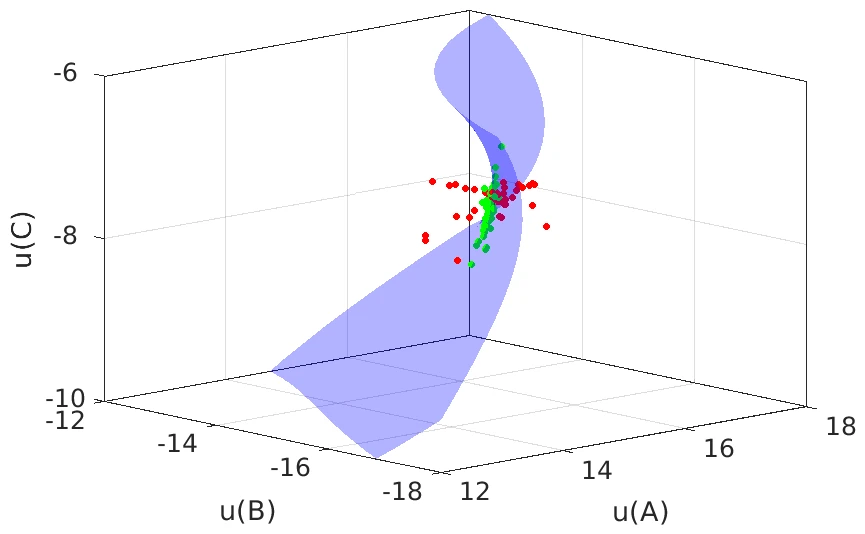
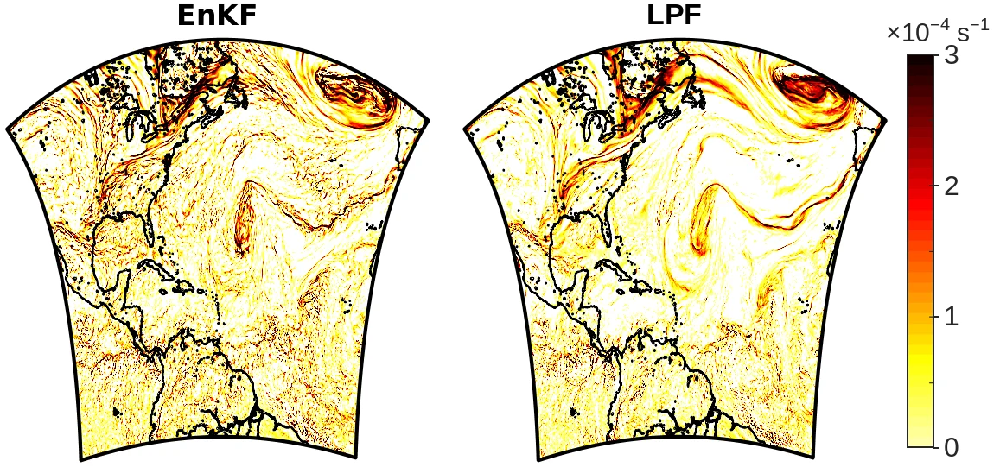
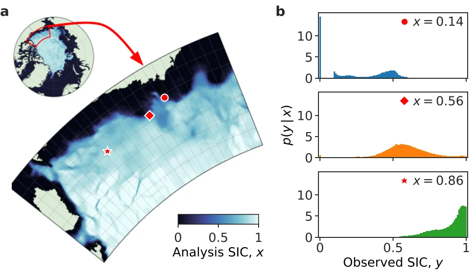

Research
Methods for combining models and observations, and the applications that test them.
Data assimilation combines imperfect models with incomplete, noisy observations to estimate the state of the atmosphere, ocean, and sea ice, and it starts every weather forecast. Our group develops ensemble, particle filter, and machine learning methods for data assimilation, especially where the usual assumptions of linear dynamics and Gaussian errors break down.


New data assimilation methodology
The local particle filter (LPF), introduced by Poterjoy (2016) and developed further by our group, drops the Gaussian assumptions of operational data assimilation while remaining practical for high-dimensional models (Poterjoy et al. 2019; Poterjoy 2022b). Where the states a model allows lie on a compact, curved manifold, ensemble Kalman filters pull members off it, while the LPF keeps them close (Poterjoy 2022a; figure); the two filters can also be blended adaptively (Kurosawa and Poterjoy 2023). We also estimate observation errors online, which works even with non-Gaussian errors but is sensitive to misspecified background uncertainty (Santer et al. 2025; Walsworth et al. 2023).
Current work Learning likelihood functions from data with kernel and machine learning methods, including approaches suited to small ensembles.


Particle filters for global weather prediction
In weather models, ensemble Kalman filter members carry spurious small-scale corrections that LPF members largely avoid (Poterjoy 2022a; bottom panel).
Current work With NOAA, testing the LPF in the Unified Forecast System behind the Global Forecast System, where it matches the accuracy of the ensemble Kalman filter while estimating uncertainty more reliably, and bringing it into JEDI, the data assimilation framework used by NOAA and NASA.


Data assimilation for mesoscale weather prediction
Thunderstorms evolve within minutes and are observed mostly by radar. Particle filter analyses of convection stay more consistent with the model than ensemble Kalman filter analyses (Poterjoy et al. 2017; McCurry et al. 2023). We also diagnose convective ensemble uncertainty (Santer et al. 2023) and helped plan the Maryland Mesonet with observing system simulation experiments (McCurry and Poterjoy 2024).
Current work Assimilating radar reflectivity with likelihoods learned from data, so weak echoes can be used without a threshold (figure).
Hurricanes and high-impact weather
We develop ensemble and hybrid data assimilation for NOAA's hurricane models. Continuous cycling in HWRF exposed errors hidden by restarting from global analyses (Poterjoy et al. 2021); in HAFS, estimating radiance bias corrections within the system improved forecasts (Knisely and Poterjoy 2023), and global ensemble perturbations mitigate sampling errors (Kurosawa and Poterjoy 2025).
Current work Basin-wide HAFS experiments reveal cloud-driven model biases and show that the LPF keeps ensemble spread closer to forecast errors than the EnKF.


Sea ice, polar prediction, and observing system design
Sea ice concentration is bounded, and its observation errors depend on the ice state (Wang et al. 2026; figure). We model atmospheric forcing errors for sea ice ensembles (Jung et al. 2026) and use observing system simulation experiments to inform requirements for a future NASA satellite mission (Choi et al. 2025).
Current work Learning sea ice observation errors from data for the LPF in the CICE model and, with NASA's PREFIRE science team, developing methods that assimilate far-infrared radiances directly.
Current support
Advancing Polar Sea Ice Prediction With PREFIRE Radiance Observations and Next-Generation Data Assimilation Methods
A Multi-University Consortium for Advanced Data Assimilation Research and Education (CADRE)
Non-Gaussian Ensemble Data Assimilation Within a Rapidly Updating Global Prediction System
Online Uncertainty Quantification for Novel Atmospheric Measurements
We also gratefully acknowledge computing support from the NSF NCAR Computational and Information Systems Laboratory.